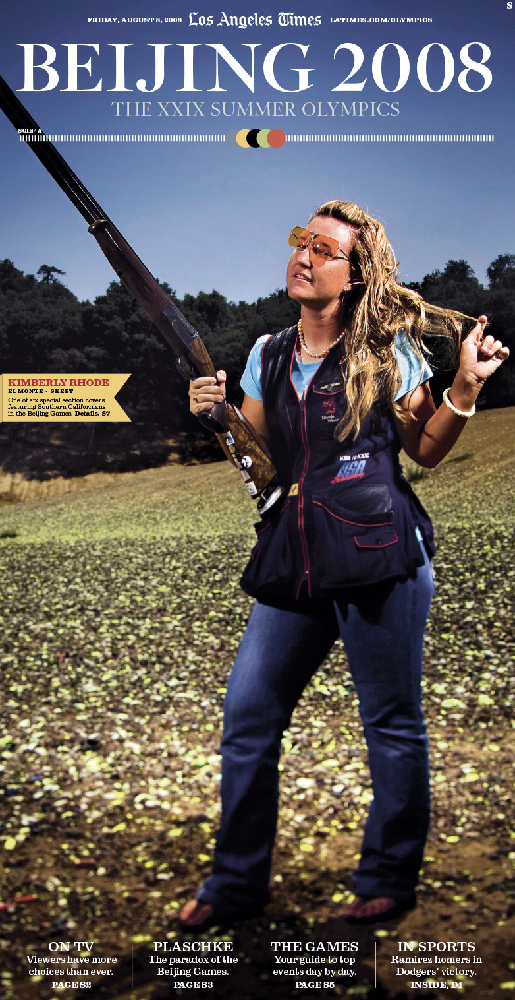
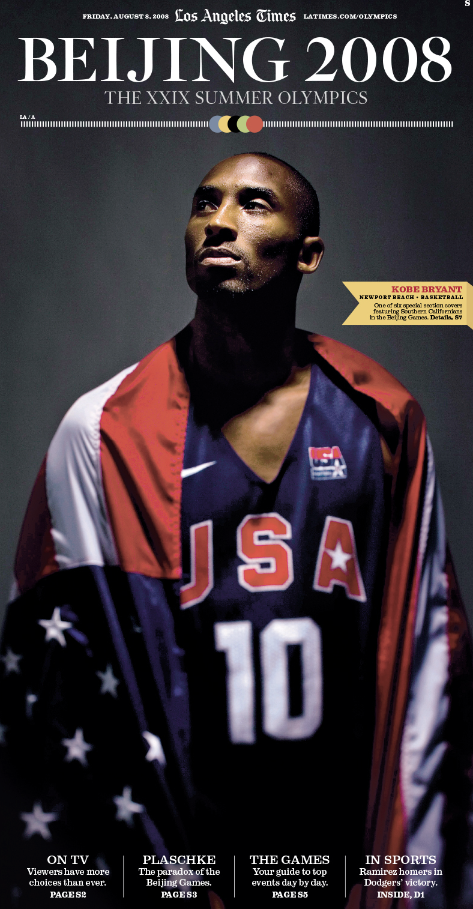
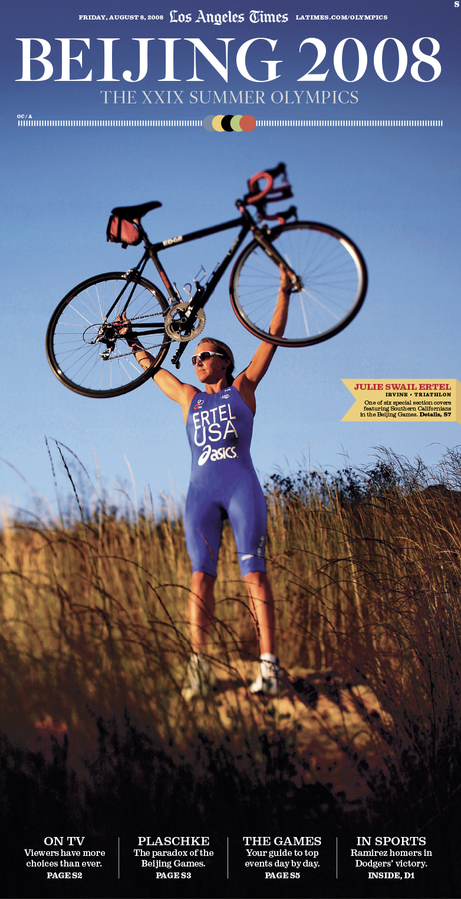
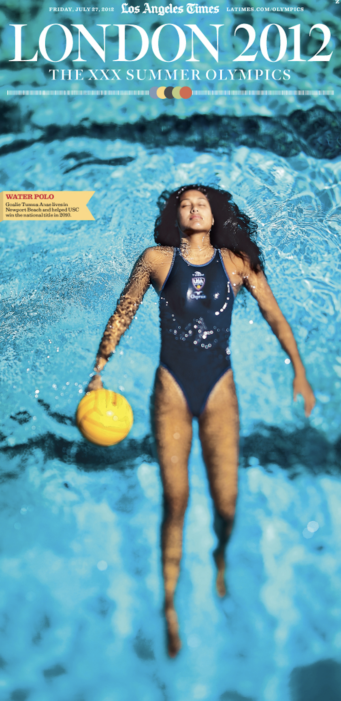
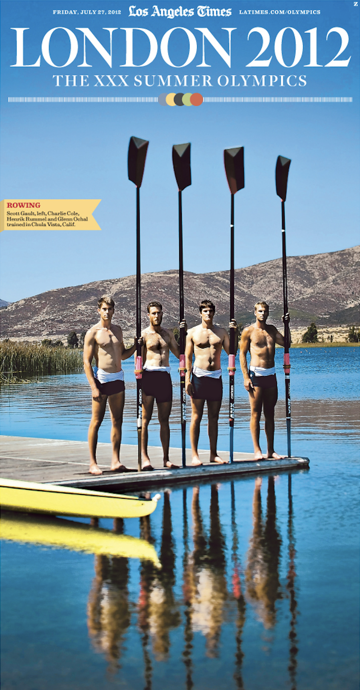
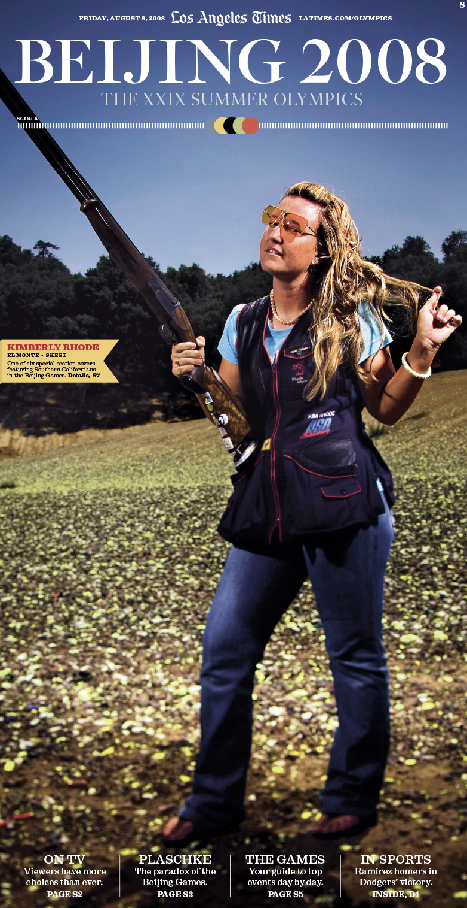
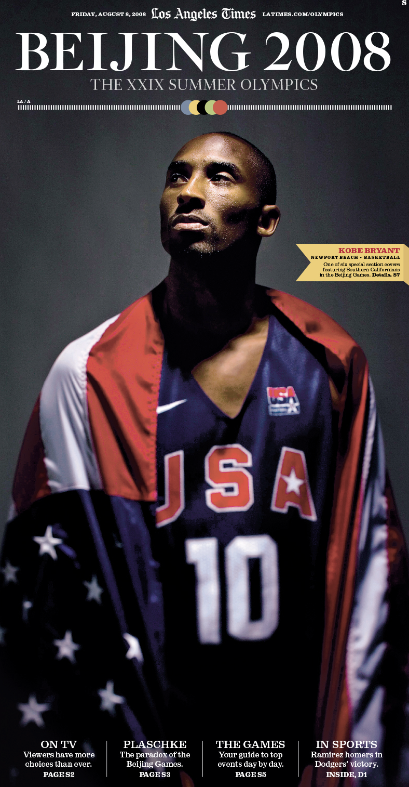
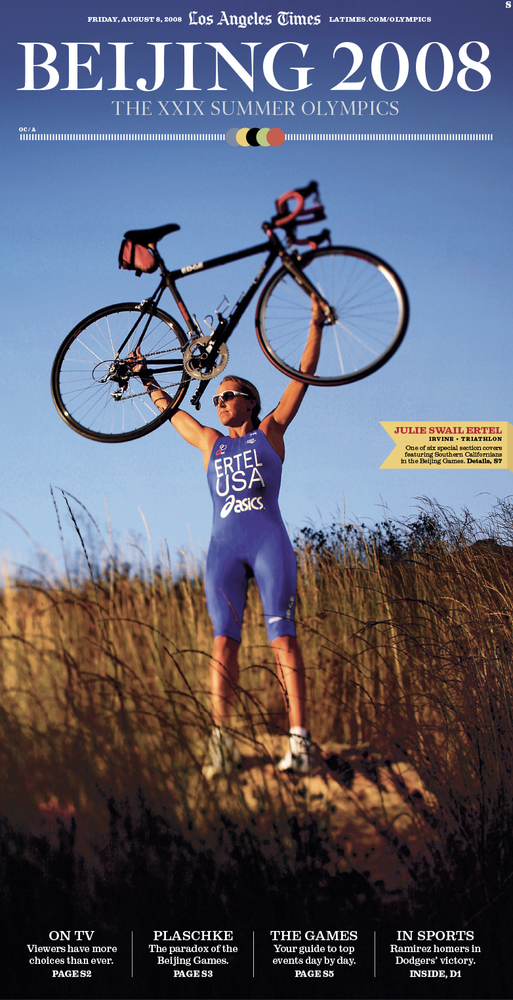
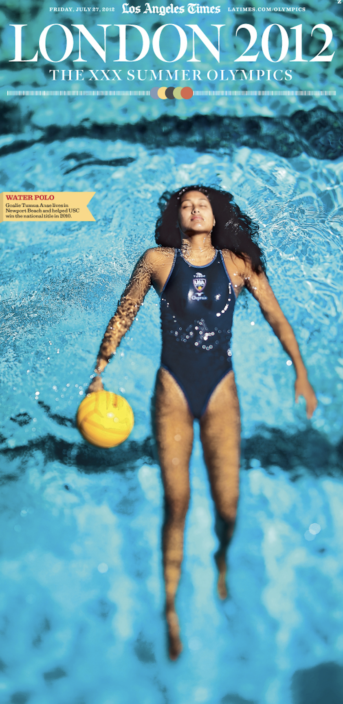
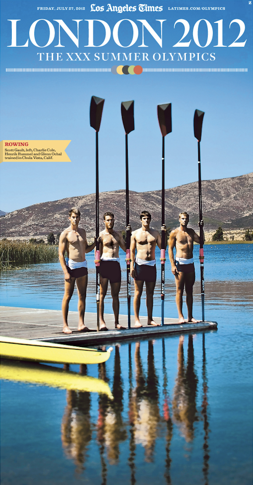
Beijing 2008 Olympic Covers

Making History

John Wooden, 1910 – 2010

The 82nd Academy Awards
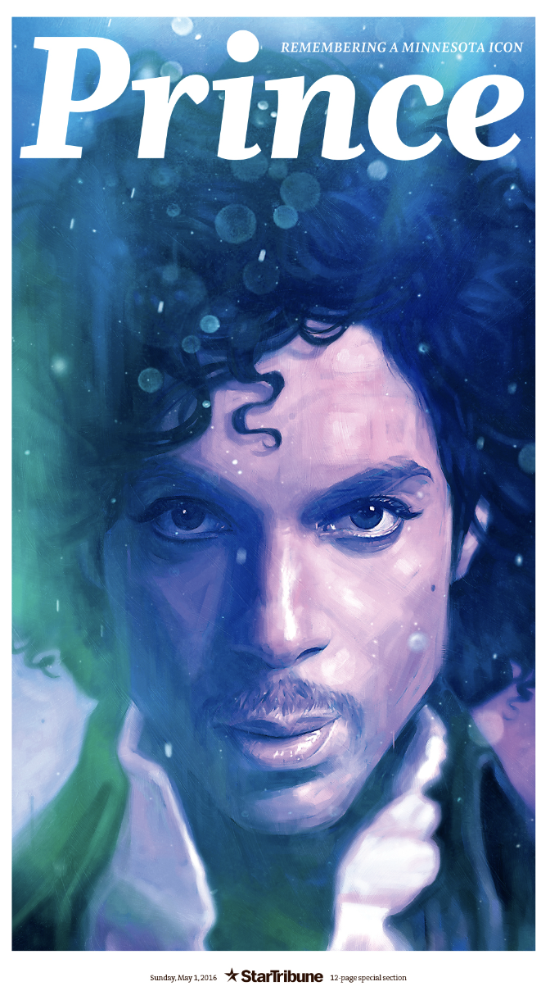
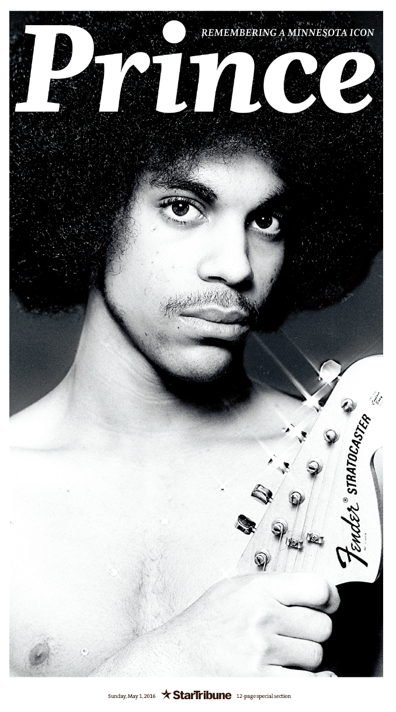
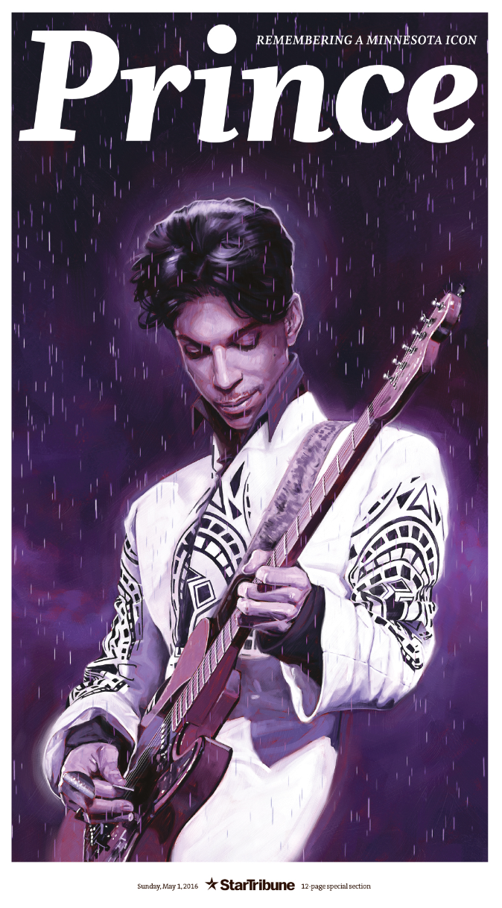

Prince: Remembering a Minnesota Icon

Trump Wave

Sugar: Our National Obsession

From the Heartland to Jihad

Star Tribune Magazine

Star Tribune Magazine. Full Spread

State of Wonders